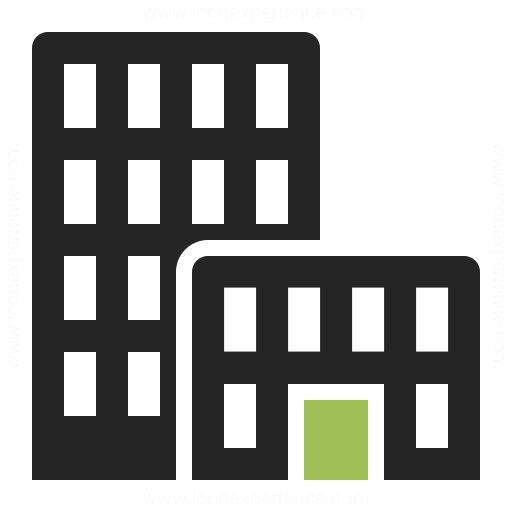

Sobre a Predial
Fundada em 2010 Predial Tecnologia é um departamento onde trabalhamos com equipamentos e serviços relacionados a tecnologia. - Painéis Solares,Cabos,Interruptores,Lâmpadas Inteligentes,Assistente virtual entre outros...Tudo para aumentar a eficiência da atividade humana em todas as esferas, incluindo a produção. Tecnologia é um produto da ciência e da engenharia que envolve um conjunto de instrumentos, métodos e técnicas que visam a resolução de problemas. É uma aplicação prática do conhecimento científico em diversas áreas de pesquisa. A importância da tecnologia é a chave da renovação contínua em nosso modo de viver. Por meio dela alcançamos patamares nunca antes imaginados e progredimos de maneira espantosa marcando a nossa história. Sem os avanços tecnológicos, nosso modo de vida não seria tão complexo. Nosso site esta aí caso queria connhecer um pouco mais de perto.
Nossa missão é: "que possamos melhorar a qualidade de vida de nossos clientes,deixando todos automatizados para qualquer inovação da humanidade!".
Oferecemos profissionais experientes e antenados às mudanças no mundo da tecnologia. O atendimento possui padrão de excelência e agilidade, garantindo qualidade e satisfação dos nossos clientes.
Nosso estabelecimento
Nosso estabelecimento está localizado no coração da cidade.
Benefícios
- Atendimento aos Clientes
- Espaço diferenciado
- Localização
- Profissionais Qualificados
- Pontualidade
- Limpeza